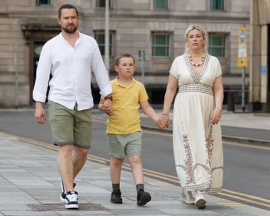

Ukrainians who fled to the UK after the Russian invasion are being refused asylum by the Home Office on the grounds it is safe to return to Ukraine.
Families are trying to obtain a route to settlement, which would enable them to build a life in the UK, commit their children to a British education and improve their prospects for jobs and housing. Some feel they have nothing to return to as they are from areas razed by conflict.
One told the Guardian they had been refused asylum on grounds they could relocate elsewhere in Ukraine , despite their home town being a war zone.
The firm Sterling Law said it was contacted weekly by Ukrainians, including vulnerable women and children, whose applications had been refused. The firm is working on several appeals, which bring waits of several months during which Ukrainians are left in limbo.
Although Ukrainians are able to remain for 18 months through the temporary visa scheme, the uncertainty about their living arrangements is compounding anxiety and distress.
Halyna Semchak, a solicitor at Sterling Law, said she was working with a single mother from Nikopol, a town which has been largely destroyed, a visually impaired man and the parent of a child born in the UK.
Their refusal letters typically state that the conflict-related risks do not meet the threshold for persecution under the refugee convention, as they can relocate to safer parts of Ukraine where there are public services, and they can apply for help from the United Nations high commissioner for refugees (UNHCR) and local organisations to avoid destitution.
She said this was a “concerning and growing trend” caused by updates made in January to the UK Home Office’s guidance, which now deems regions such as Kyiv and western Ukraine to be “generally safe”. She has observed that fewer of the asylum claims she works on have been successful since the update.
“This assessment runs counter to the reality of life on the ground in Ukraine. I think any rational person would understand that Ukraine remains in the midst of a violent war, with attacks intensifying in recent months. Our clients would clearly face grave risks including bombardment, conscription, family separation and the psychological trauma of war if they were to return to Ukraine today,” she said.
“Legally, these decisions are deeply troubling. They overlook the complex realities on the ground and fail to engage meaningfully with individual circumstances, particularly in light of article 3 and 8 of the European convention on human rights [which protect the rights to protection from harm and to liberty].”
She urged the government to reassess the guidance. “Until that happens, people fleeing war and instability will continue to be let down by a system that purports to protect them,” she said.
Oleksandr Zbytskyi was refused asylum despite being from Odesa in southern Ukraine, a war zone subject to infrastructure blackouts. While the Home Office was considering his application, five people died in a missile attack.
Oleksandr, Viktoriia and Vladimir in Cardiff.Photograph: Dimitris Legakis/Athena/The Guardian
Zbytskyi and his family have been in the UK since August 2022. He wants his son, who was four-years-old when he arrived in the UK and speaks better English than Ukrainian, to continue at school and for his wife to keep receiving treatment for anxiety, depression and panic attacks.
Every member of his close family has died, some fighting on the frontline, others because they could not access medical treatment. If he returns, he may be drafted into the military.
“It was really unexpected to achieve rejection … Who is willing to take their child and bring them back to the country where there is a full-scale war?” Zbytskyi said.
“We are depressed about this because it’s affected all our family. I can’t do anything at the moment because of everything in my head. I can’t even sleep. This is a really terrible situation.
“[My son] has already started his mental relocation to UK society. I don’t want to create another stress for him and for my wife. I know that it’s very, very important to live a normal life.”
Kama Petruczenko, a senior policy analyst at the Refugee Council, said he was concerned that the Ukraine guidance “is not currently flexible enough to best reflect the difficulties in quickly assessing regional safety in every single application”.
The latest Home Office figures suggest that 47 asylum applications have resulted in refugee status and 724 in humanitarian protection since 2023.
A Home Office spokesperson said: “Since Vladimir Putin’s illegal invasion, we have offered or extended sanctuary to over 300,000 Ukrainians and the Homes for Ukraine scheme remains open.
“All asylum and human rights claims are carefully considered on their individual merits in accordance with our international obligations. No one who is found to be at risk of serious harm will be expected to return to Ukraine.”